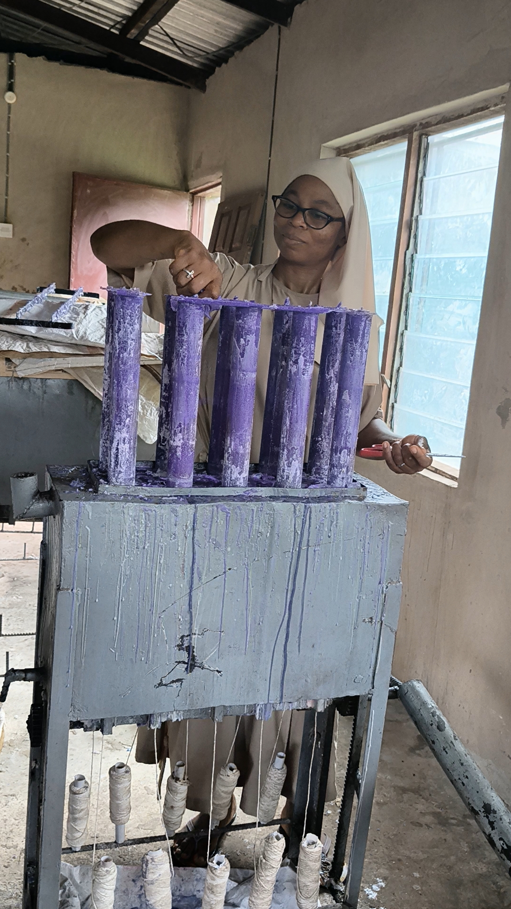
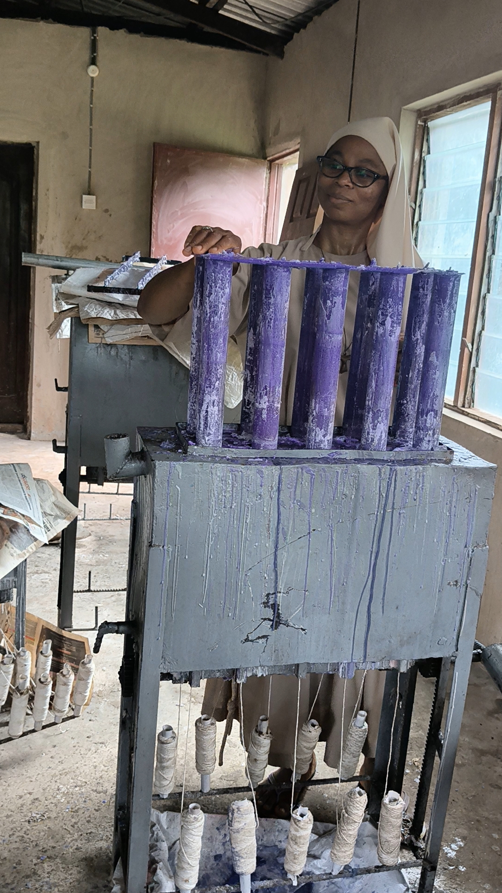
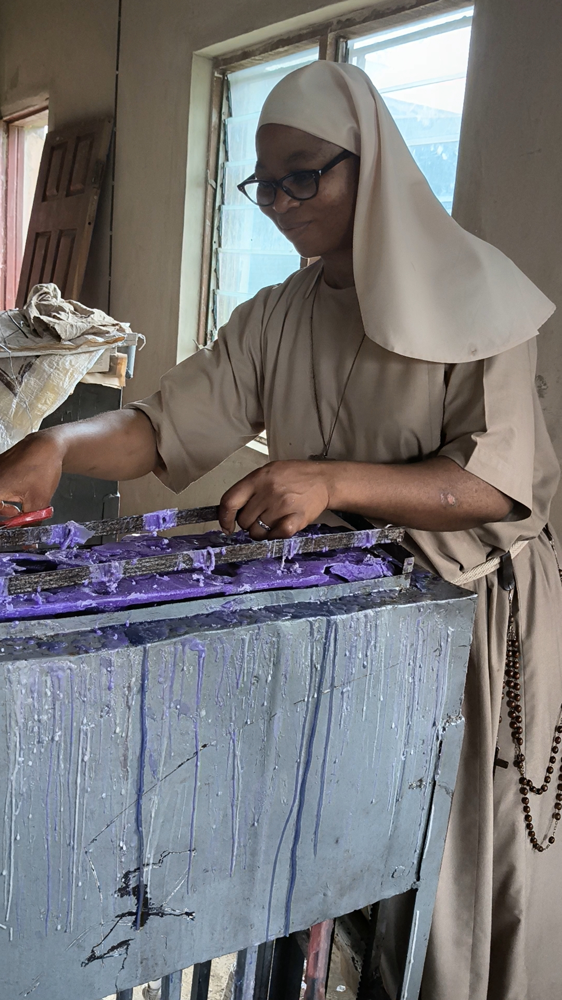
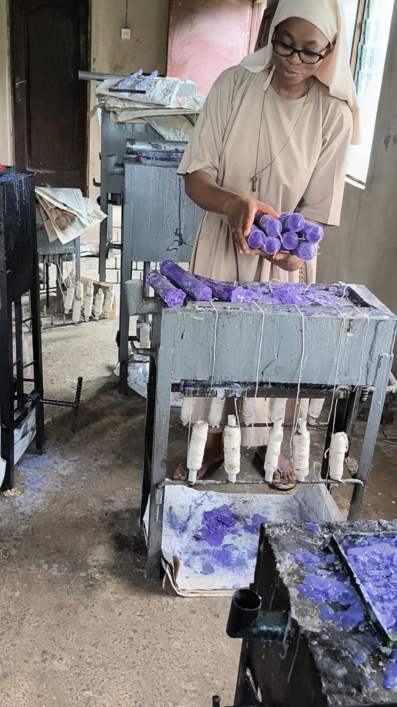
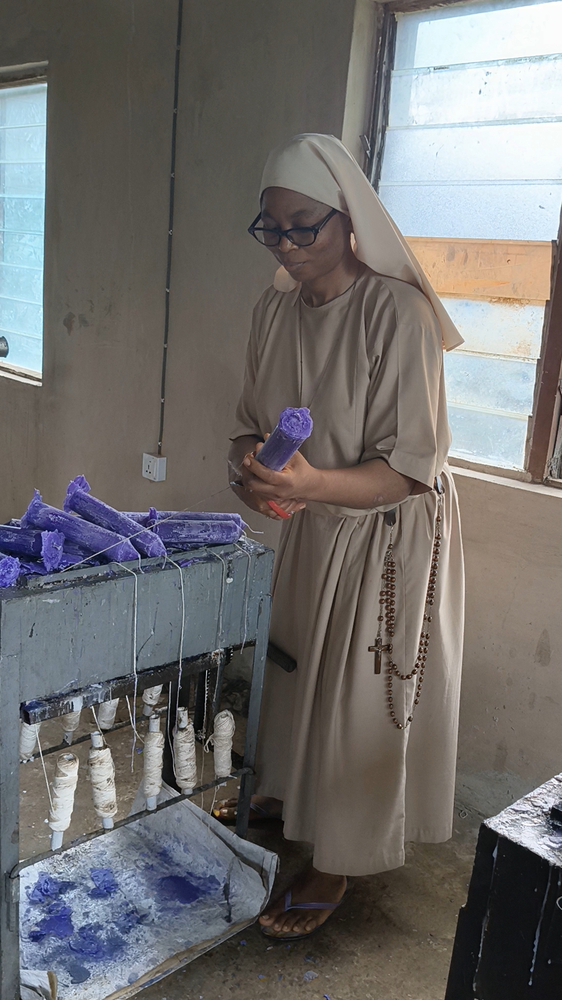
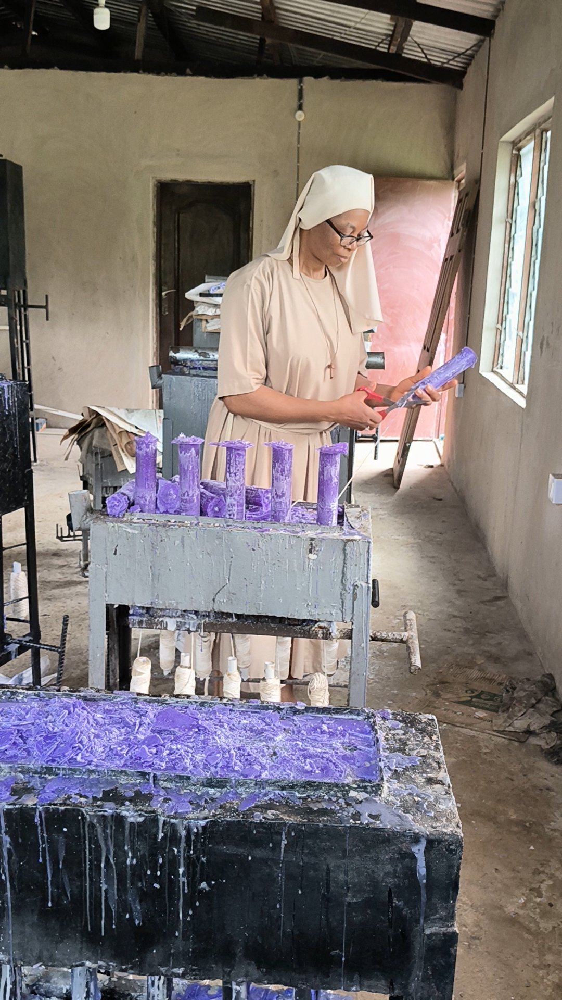
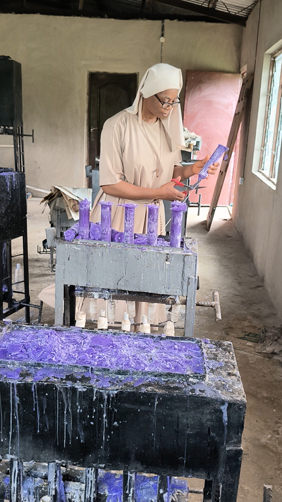
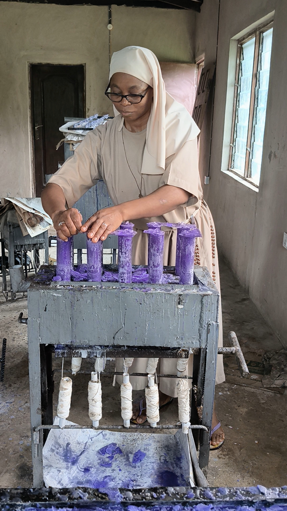
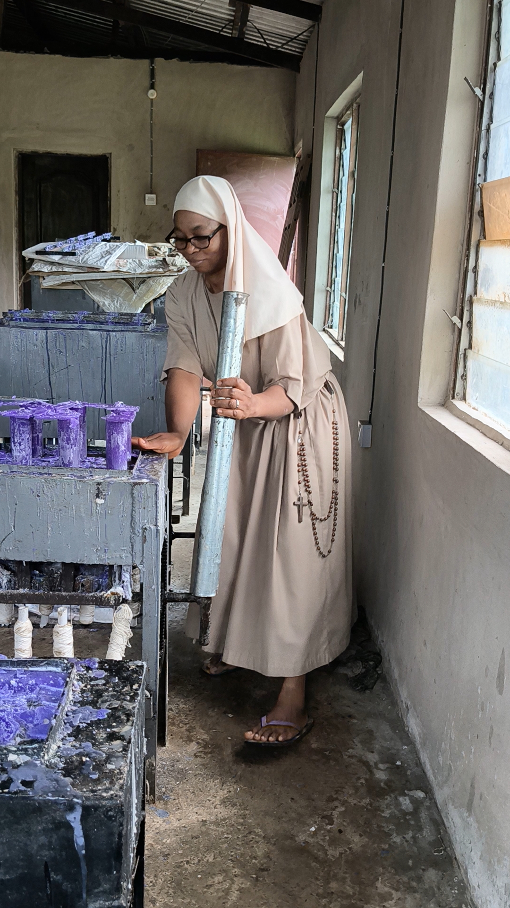
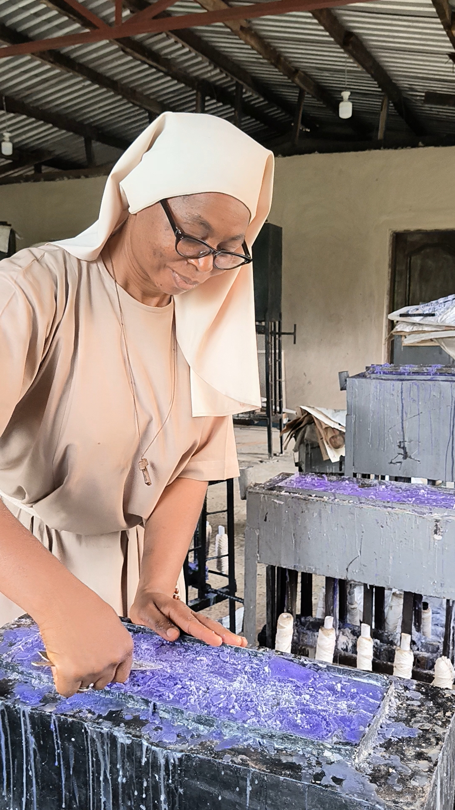
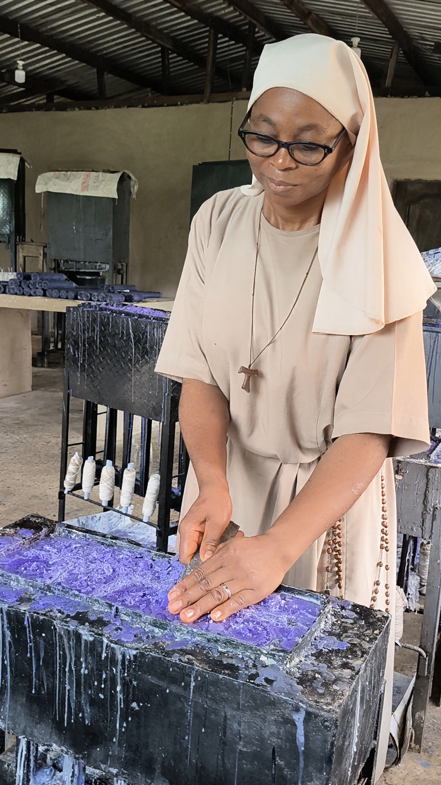


Every candle, every host, every quiet hour of work — captured in a single place. Browse the crafts and the daily labor of the Nuns of St. Clare.
Advent is the season in which the Church prepares her heart for the coming of Christ — His first coming in Bethlehem, and His final coming in glory. It is a season of waiting, but not passive waiting. It is the waiting of a bride for her bridegroom, of a people for their king, of a soul for its God.
The Purple of Advent — In the Church's tradition, Advent is dressed in purple — the colour of penance, kingship, and expectation. It is the same purple worn during Lent, and it tells us that this is a season of preparation, not celebration; of longing, not fulfilment. But it is also the purple of royalty — for the King is coming, and His people are preparing His way.
At the centre of every parish's Advent is the Advent Wreath and its candles — three purple, one rose, and the white Christ Candle at the centre. Each Sunday of Advent, another candle is lit, and the Church draws closer to the mystery of the Incarnation. Together, the candles tell the story of our salvation — the long wait of Israel, the cry of the prophets, the joy of the Baptist, and at last the birth of the Light of the World.
St. Clare Candle and Altar Bread Enterprise crafts each Advent candle with the same care the Sisters give to the sanctuary candles — pure wax, clean wicks, steady flame, and a life that burns for the glory of God. Whether your parish needs a single Advent set or candles for every wreath in the church, we prepare each one in silence, prayer, and precision.
Today we are in the 26th Week of Ordinary Time, Year A. Time waits for no man. Every week is a step closer to Advent. Buy now and keep.










